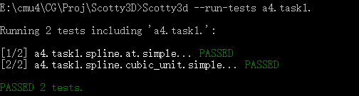
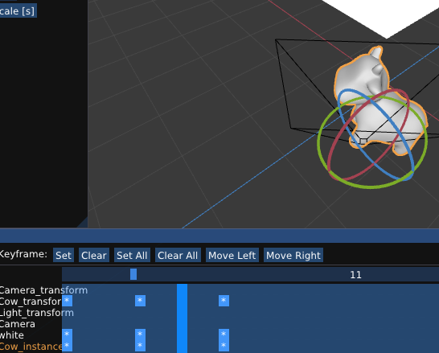
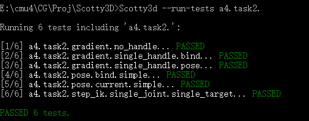
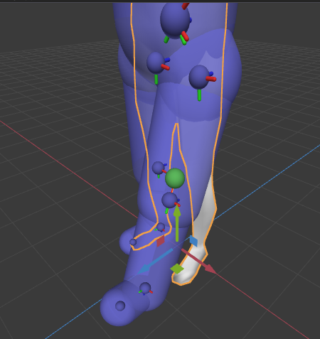
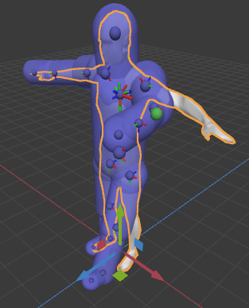
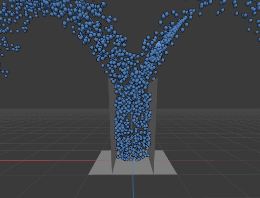
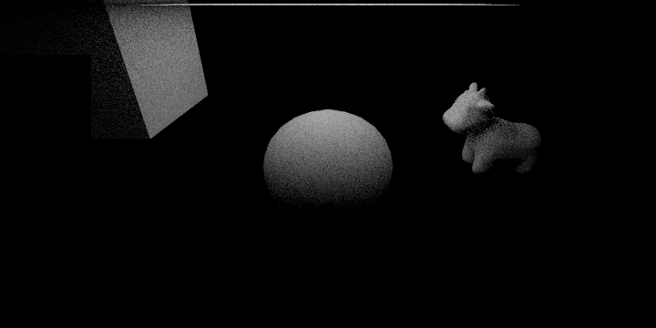
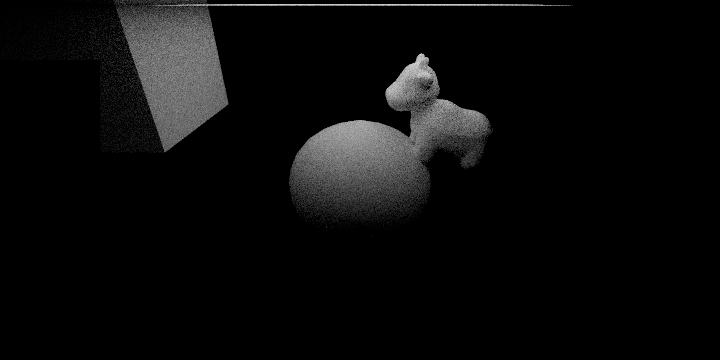
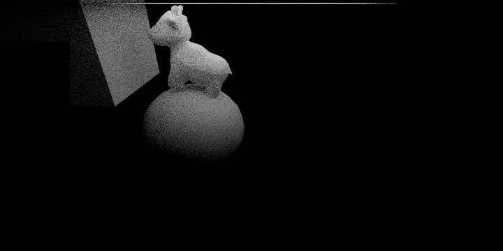

**Assignment 4 Report**
AndrewID: chuangm
(##) About this template
* You can view your writeup by opening it in a browser - right click this file and open with your browser of choice.
* Replace reference images with your own screenshots or renders when applicable.
* Include descriptions of any encountered problems and the time you spent on each task.
(##) A4T1 CHECKPOINT
You do not need any screenshots for this task.
Your completion will be graded based on the reference `test.a4.task1.cpp` file and
checking that the spline interpolation looks correct.


(##) A4T2 CHECKPOINT
You do not need any screenshots for this task.
Your completion will be graded based on the reference `test.a4.task2.*.cpp` files and
checking that moving the bones works correctly and IK is functional.



(##) A4T3 FINAL
You do not need any screenshots for this task.
Your completion will be graded based on the reference `test.a4.task3.*.cpp` files and
checking that the skeleton moves correctly when the bones are moved.
(##) A4T4 FINAL
Do you want to use the reference A3T2 solutions for this task: __no__ (yes/no), but if anything wrong,
please try reference one though I thought my T2 is correct, thanks!
You do not need any screenshots for this task.
Your completion will be graded based on the reference `test.a4.task4.*.cpp` files and
checking that particle simulation behaves correctly and does not go through any surface.

(##) ANIMATED VIDEO FINAL
Your animation:
please check animation2.mp4
Explanation of what it is and how you made it:
This is an animation that the cow move and jump on the ball, then they will move for a while until
cow is stopped by the cude.
I made this by creating a ball and import cow. Then using animation aprt to create this.
Some key frames:



Any free model sources you need to credit?
No
(##) EXTRA CREDIT FINAL
Use this section to explain any extra credit implementations you have made.
(##) Feedback
Use this section to provide feedback about the assignment.
T1:
8 hours. Just implemnet the task isn't very difficult. However, need to check about a lot of
corner cases and some special cases, especailly how normalization affects the value computed by the subroutine.
T2:
10 hours: The most difficult part is to get the gradient. By visiting OH, I can successfully figure out the logic and
the right formula to use for that part.
T3:
12 hours: this task is not difficult to understand. But there are many things to notice. I don't do the
check of size of weights until I visited OH. Besides, bind-to-current transformation matrices is easy to make
mistakes.
T4:
18 hours: this task is kind of difficult to me for there are lots of corner cases to notice. For example, need to make sure to Use
unit(), the situation that v is 0 or t is less than 0. I have visited 3 OH to finish
this part.